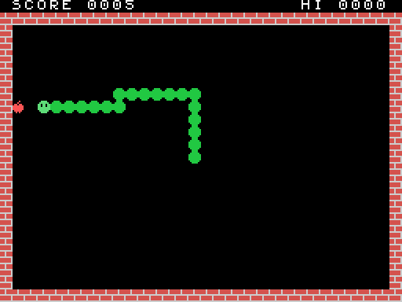

This tutorial builds a complete game for the MSX1 in Z80 assembly. It's a snake game: you steer
with the cursor keys, eat apples, grow longer and speed up, and the game ends when you hit a wall
or yourself. The result is an ordinary 16 KB cartridge. It runs in MSX.eeform and also on a real
MSX or in openMSX.

It takes five steps. Each one is a complete program in docs/msx/snake/ that you can
build and run:
| Step | File | What it adds |
|---|---|---|
| 1 | step1.asm |
A cartridge that boots and prints "Hello, MSX!" |
| 2 | step2.asm |
Our own tiles: bricks, the snake, an apple; the playing field and the score |
| 3 | step3.asm |
The snake moves, steers and crashes |
| 4 | step4.asm |
Apples: eating, growing, the score, speeding up |
| 5 | snake.asm |
Sound, a title screen, the best score, playing again |
The MSX: the MSX app, right here in your browser — or MSX.eeform in
EEditor (download). Load cartridge… takes a .rom; click the screen
so it gets the keys. Snake plays the finished game.
The assembler: z80asm.mjs, one file with nothing else needed but
Node.js. It turns a .asm file into a .rom:
node z80asm.mjs step1.asm → step1.rom
node z80asm.mjs step1.asm -l the same, and a listing: address, bytes, source
It takes the usual Z80 source syntax, close to sjasmplus's.
The source of each step, below.
So the loop is: edit → node z80asm.mjs → Load cartridge…. After you rebuild, load the
new .rom again; Reset restarts the cartridge that's already loaded.
It's a Z80 at 3.58 MHz with 64 KB of address space in four 16 KB pages:
| Address | What's there when our cartridge runs |
|---|---|
0x0000–0x3FFF |
The BIOS ROM: routines we can CALL (clear the screen, read the keys, make sound…) |
0x4000–0x7FFF |
Our cartridge |
0x8000–0xBFFF |
Nothing we'll use |
0xC000–0xFFFF |
RAM. The BIOS keeps its variables and the stack at the top (from 0xF380); we use 0xE000–0xE20F |
The picture comes from a separate chip, the TMS9918A VDP. It has 16 KB of video memory of its
own, which the Z80 can't see directly. To reach it, the Z80 sends an address to I/O port 0x99,
then reads or writes bytes through port 0x98. The address moves on by one after each byte.
The sound comes from a third chip, the AY-3-8910 PSG. It has three tone channels, a noise generator and an envelope, all controlled by 14 registers.
When the MSX starts, the BIOS looks in each slot for the letters AB. If it finds them at
0x4000, it calls the address stored right after them:
org 0x4000 ; the bytes that follow go at 0x4000
db "AB"
dw start ; where our program starts
ds 12 ; the rest of the 16-byte header: unused
The BIOS has an entry point for each routine at a fixed address, the same on every MSX. We give
them names with equ:
CHGCLR equ 0x0062 ; set the screen's colours from FORCLR, BAKCLR and BDRCLR
INIT32 equ 0x006F ; SCREEN 1: 32×24 tiles of 8×8 pixels
FORCLR equ 0xF3E9 ; the BIOS's colour variables, in RAM
start: ld a,15 ; white letters
ld (FORCLR),a
ld a,4 ; on dark blue
ld (BAKCLR),a
ld (BDRCLR),a
call CHGCLR
call INIT32 ; SCREEN 1, the font loaded, the screen cleared
The MSX has 16 colours, numbered 0–15: 1 black, 4 dark blue, 15 white, and so on. You can see all
16 in TMS_PALETTE in src/display/tms9918.ts.
The whole game uses SCREEN 1, "Graphics I" in the chip's own terms. The screen is a grid of 32×24 cells, and each cell shows one of 256 tiles of 8×8 pixels. Three tables in video memory make the picture:
| Table | Address | Size | What |
|---|---|---|---|
| Patterns | 0x0000 |
256 × 8 bytes | Each tile's pixels: a byte per row, a 1 bit is ink |
| Names | 0x1800 |
32 × 24 bytes | Which tile each cell shows, row by row |
| Colours | 0x2000 |
32 bytes | The colours of each group of 8 tiles: ink × 16 + paper |
INIT32 loads the font into the patterns, so tile 65 is a letter A. To put a letter on the
screen, we write its code into the names table. The cell at column x, row y is at
0x1800 + y*32 + x.
setwrite:
di
ld a,l
out (VDP_CTRL),a ; the address's low byte…
ld a,h
or 0x40 ; …then the high byte, with 01 in the top bits: for writing
out (VDP_CTRL),a
ei
ret
After this, each out (VDP_DATA),a writes a byte and moves the address on. print uses it to
write a string that ends in 0, starting at cell DE.
Why di/ei? Sixty times a second the video chip interrupts the Z80, and the BIOS's interrupt
handler reads the chip's status. That read resets the chip's "first or second byte?" latch. If
the interrupt came between our two bytes, the chip would take our second byte as a first one.
So the two outs go with interrupts off.
forever: ei
halt ; wait for the next frame, for ever
jr forever
halt stops the Z80 until the next interrupt, which arrives at the start of every frame, 60 times
a second. A game's main loop is exactly this, with work between the halts. It's how the game
keeps time.
Build it, load it, and the screen says hello.
From this step on, the constants for the whole game are at the top of the file: every BIOS routine, the video tables, and our variables in RAM.
A tile is 8 bytes, one per row, with the leftmost pixel in the top bit. Here's the head:
db 0b00111100 ; ####
db 0b01111110 ; ######
db 0b11011011 ; ## ## ## the eyes are paper
db 0b11011011
db 0b11111111
db 0b11111111
db 0b01111110
db 0b00111100
In SCREEN 1, colours belong to groups of eight tiles. Tiles 0–7 share colour byte 0, tiles 8–15 share byte 1, and so on. To give each of our tiles its own colours, each goes at the start of its own group:
EMPTY equ ' ' ; the font's space
WALL equ 0x80 ; group 16
BODY equ 0x88 ; group 17
HEAD equ 0x90 ; group 18
APPLE equ 0x98 ; group 19
colours: db 0x6E ; wall: ink 6 (dark red), paper 14 (grey)
db 0x21 ; body: green on black
db 0x31 ; head: light green
db 0x81 ; apple: red
Tiles 0x80–0x9F are font characters we don't need, so we draw over them. LDIRVM is the BIOS's
"copy memory to video memory": it copies BC bytes from HL to DE. One call per tile puts the
pixels in (that's the .tile loop), and one call puts the four colours at 0x2000 + 0x80/8.
field fills the screen with spaces (FILVRM), then draws the walls: two full rows with
FILVRM and the two sides cell by cell with put. put puts tile A on cell HL. Then it writes
SCORE and HI.
The score is kept in BCD, binary-coded decimal: each 4 bits hold one decimal digit, so the
score 1234 is the two bytes 0x34 0x12. That makes printing easy, because each nibble plus '0'
is a digit, with no division needed (bcd). Adding to a BCD number is easy too, as step 4 shows.
A label that starts with ., like .two in bcd or .side in field, is local: it
belongs to the label above it, so every routine can have its own .loop without a clash.
The snake is a list of cells, from its tail to its head. Each step, a new cell goes on at the
head and one comes off at the tail. A ring buffer does this without moving anything: 256
entries of 2 bytes at RING, and two one-byte indexes. HEADI is the head's entry and TAILI
the tail's. Moving means inc on each index, and because they're bytes, 255 wraps round to 0 by
itself. ringat turns an index into the entry's address.
A cell is a number from 0 to 767 (y*32 + x). That makes moving a single addition: +1 is right,
−1 left, +32 down, −32 up. DIR holds the one we're going in.
The main loop runs once per frame. The snake moves only once every SPEED frames, counted down in
TIMER. With 8 frames per step that's 7.5 cells a second:
play: ei
halt ; the next frame
call steer ; read the keys every frame…
ld hl,TIMER
dec (hl)
jr nz,play ; …but move only when the timer runs out
ld a,(SPEED)
ld (TIMER),a
call step
jr nc,play ; no carry: still alive
GTSTCK with A=0 reads the cursor keys as a direction: 1 up, 3 right, 5 down, 7 left (and the
diagonals in between). steer turns that into a step and keeps it in WANT. It doesn't go into
DIR straight away: step takes it only if it isn't the exact opposite of DIR, which would
send the snake into its own neck. A direction plus its opposite is 0, so that's the test:
step: ld hl,(WANT)
ld de,(DIR)
add hl,de ; a direction and its opposite add up to 0
ld a,h
or l
jr z,.ahead ; straight back: ignore it
Each step:
BODY.DIR.get reads the tile on that cell from the names table (setread, then in a,(VDP_DATA)).
The screen is our map: if the cell isn't EMPTY, we've hit a wall or ourselves. We return
with the carry flag set.HEAD goes on the new cell, and the cell is added at HEADI.EMPTY, and TAILI moves on.When step returns with the carry set, the main loop prints GAME OVER and stops.
The Z80 has no random-number instruction. random is a 16-bit xorshift: a few shifts and
XORs that walk through all 65,535 non-zero values in a scrambled order. In this step SEED always
starts at 1, so every game has the same apples. Step 5 fixes that.
apple picks a random cell and keeps trying until the cell is empty and on the field:
apple: call random
ld a,h
and 3
ld h,a ; 0–1023
cp 3
jr z,apple ; 768 and over: off the screen
… ; rows 0 and 1 (the score, the top wall): try again
.on call get
cp EMPTY
jr nz,apple ; something's there: try again
ld a,APPLE
jp put
In step, if the next cell holds APPLE, we call eat before moving on:
A point, added in BCD. daa ("decimal adjust") fixes the digits after a binary add, and the
carry takes a 1 from the units and tens into the hundreds:
ld a,(SCORE)
add a,1
daa ; 0x09 + 1 = 0x0A → 0x10
ld (SCORE),a
ld a,(SCORE+1)
adc a,0 ; the carry
daa
ld (SCORE+1),a
Three cells longer. GROW counts steps on which the tail stays put. The check on the length
keeps the snake under 240 cells, so the 256-entry ring never fills.
Faster: every fourth apple takes one frame off SPEED, down to 3, which is 20 cells a
second.
A new apple.
The PSG is set through its registers: WRTPSG writes E into register A. psg writes a list of
register and value pairs that ends with 0xFF, so each sound is a line of data:
quiet: db 7,0b10011110, 8,0, 9,0, 10,0, 0xFF
chomp: db 0,80, 1,0, 8,16, 10,0, 11,0, 12,4, 13,0, 0xFF
crash: db 6,31, 8,0, 10,16, 11,0, 12,40, 13,0, 0xFF
| Register | What it does |
|---|---|
| 0–1 | Channel A's pitch: the chip's 1,789,772 Hz ÷ 16 ÷ this. 80 gives about 1,400 Hz, a "blip" |
| 6 | The noise's pitch: 31 is the lowest, a rumble |
| 7 | The mixer. A 0 bit turns something on: bits 0–2 tone A/B/C, bits 3–5 noise A/B/C. Bits 6–7 must be 10 on an MSX |
| 8–10 | Volumes of A, B, C: 0–15, or 16 to follow the envelope |
| 11–12 | The envelope's length |
| 13 | The envelope's shape. 0 fades out once; writing it restarts the envelope |
The envelope makes each sound fade out by itself. The game starts a sound and never has to stop it, so there's no sound code in the main loop. The eating blip is channel A's tone with a short envelope. The crash is noise on channel C with a long one.
Before the first game, the program draws the field with the title over it and calls waitspace.
waitspace waits for Space to be let go, then pressed (GTTRIG with A=0 is the space bar). It
calls frame once per frame, and frame also adds 1 to SEED. How long the player takes to
press Space decides where the apples fall, so no two games are the same.
BCD numbers compare just like ordinary ones, so finding a new best is a 16-bit subtraction:
ld hl,(HISCORE)
ld de,(SCORE)
or a ; clear the carry…
sbc hl,de ; …HISCORE − SCORE: a carry means SCORE is higher
jr nc,.over
ld (HISCORE),de
Then GAME OVER, waitspace, and jp newgame. The game goes on as long as you want to play.
Some ideas, roughly from easy to harder:
field after a number of apples.
get sees them without any other change.SNSMAT (0x0141, A = keyboard row, returns its bits,
with a 0 bit for a key held). P is row 4, bit 5.0x3800, position and
colour at 0x1B00 (y, x, pattern, colour, with y = 208 ending the list). Move it a pixel at a
time between steps. The demo cartridge in MSX.eeform moves a sprite; its listing is in the form.SNSMAT.push/pop around the call, as psg does around WRTPSG.JR and DJNZ reach only 127 bytes either way. Use JP.VDP_CTRL were split by the interrupt (keep them in
di/ei), or a tile went past the screen (cell over 767)."AB" at 0x4000 and the dw start after it.
Build with -l and look at the listing.halt with interrupts off. ei before each halt..rom is too big. The final ds 0x8000 - $ says "the code before it is too long" if
the program grows past 16 KB. Without a mapper a cartridge can be 32 KB: ds 0xC000 - $
(docs/msx/MSX.md).| Name | Address | In | Out |
|---|---|---|---|
CHGCLR |
0x0062 |
FORCLR, BAKCLR, BDRCLR (0xF3E9–B) |
The colours set |
INIT32 |
0x006F |
SCREEN 1, cleared, the font loaded | |
FILVRM |
0x0056 |
HL video address, BC count, A byte | |
LDIRVM |
0x005C |
HL memory, DE video address, BC count | |
WRTPSG |
0x0093 |
A register, E value | |
GTSTCK |
0x00D5 |
A = 0 (cursor keys) | A = 0–8: 0 none, 1 up, then clockwise |
GTTRIG |
0x00D8 |
A = 0 (space bar) | A = 0xFF held, 0 not |
SNSMAT |
0x0141 |
A = keyboard row | A = its keys, a 0 bit is held |
SIZE equ 32*24 ; a constant
label: ld a,(hl) ; a label starts in column 1; the colon is optional
.loop djnz .loop ; a local label, belonging to the label above
org 0x4000 ; where the following bytes go
db 1, "text", 'c', 0x1F, $1F, 1Fh, 0b101, %101
dw label ; a word, low byte first
ds 16, 0xFF ; 16 bytes of 0xFF
ld a,HIGH(label) ; and LOW()
Expressions can use + - * / % & | ^ << >> ~, parentheses, and $ for the current address. The
assembler knows all the documented Z80 instructions, IX and IY included. The source file says
the rest: dev/z80asm.mjs.